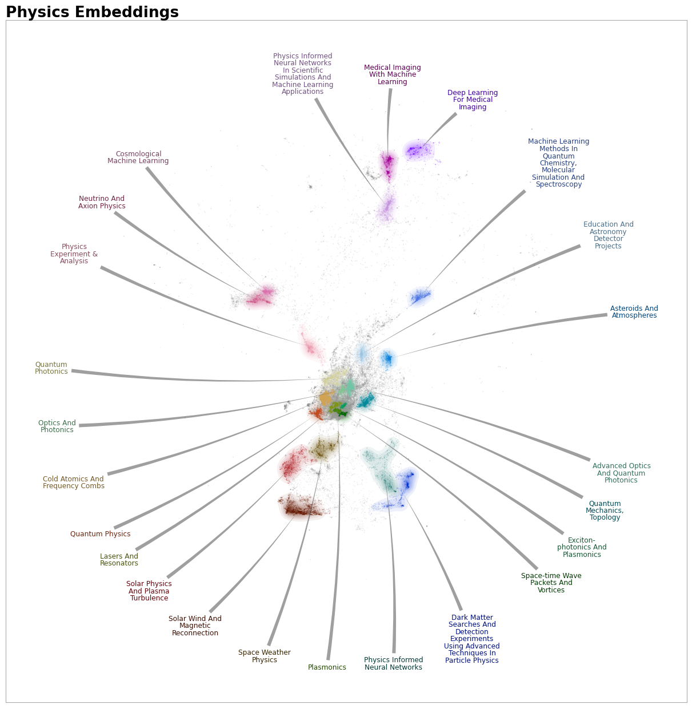

[1]:
import pandas as pd
import numpy as np
from pathlib import Path
import matplotlib.pyplot as plt
import datamapplot
from llama_cpp import Llama
import sentence_transformers
pn.extension()
2024-05-16 01:51:26.900624: I tensorflow/core/util/port.cc:111] oneDNN custom operations are on. You may see slightly different numerical results due to floating-point round-off errors from different computation orders. To turn them off, set the environment variable `TF_ENABLE_ONEDNN_OPTS=0`.
2024-05-16 01:51:26.902998: I tensorflow/tsl/cuda/cudart_stub.cc:28] Could not find cuda drivers on your machine, GPU will not be used.
2024-05-16 01:51:26.934816: E tensorflow/compiler/xla/stream_executor/cuda/cuda_dnn.cc:9342] Unable to register cuDNN factory: Attempting to register factory for plugin cuDNN when one has already been registered
2024-05-16 01:51:26.934842: E tensorflow/compiler/xla/stream_executor/cuda/cuda_fft.cc:609] Unable to register cuFFT factory: Attempting to register factory for plugin cuFFT when one has already been registered
2024-05-16 01:51:26.934863: E tensorflow/compiler/xla/stream_executor/cuda/cuda_blas.cc:1518] Unable to register cuBLAS factory: Attempting to register factory for plugin cuBLAS when one has already been registered
2024-05-16 01:51:26.941221: I tensorflow/tsl/cuda/cudart_stub.cc:28] Could not find cuda drivers on your machine, GPU will not be used.
2024-05-16 01:51:26.941724: I tensorflow/core/platform/cpu_feature_guard.cc:182] This TensorFlow binary is optimized to use available CPU instructions in performance-critical operations.
To enable the following instructions: AVX2 AVX512F AVX512_VNNI FMA, in other operations, rebuild TensorFlow with the appropriate compiler flags.
2024-05-16 01:51:27.816330: W tensorflow/compiler/tf2tensorrt/utils/py_utils.cc:38] TF-TRT Warning: Could not find TensorRT
Let’s load a dataframe containing our documents or objects to embed along with their metadata along with some high dimensional vectors representing these objects and a data_map or two dimensional numpy array of the vectors often constructed via umap.
[2]:
data = pd.read_feather('all_arxiv_papers_umap_df.feather')
data_map = np.array(list(zip(data.x, data.y)))
data_vectors = np.load('all_arxiv_papers_all_mpnet-base-v2.npy')
[3]:
import sys
topic_path=Path("/work/home/jchealy/STAMP2024/TopicNaming/")
sys.path.append(str(topic_path))
from topic_naming import Toponymy
[4]:
llm = Llama(model_path=str(topic_path / "openhermes-2.5-mistral-7b.Q4_K_M.gguf"), n_gpu_layers=0, n_ctx=4096, stop=["--", "\n"], verbose=False, n_threads=48)
embedding_model = sentence_transformers.SentenceTransformer("all-mpnet-base-v2", device="cpu")
We instantiate a Toponymy object with our required information, embedding model and large language model.
[5]:
index = data.categories.str.contains('physics')
topic_namer = Toponymy(documents=data.title[index],
document_vectors=data_vectors[index,:],
document_map=data_map[index,:],
embedding_model=embedding_model,
llm = llm,
document_type='titles',
corpus_description='physics articles',
verbose=True,
)
topic_namer.fit_clusters(base_min_cluster_size=500)
constructing cluster layers
cluster=24, last_min_cluster_size=500, min_cluster_size=1538
cluster=5, last_min_cluster_size=1538, min_cluster_size=4224
We can call a number of intermediary functions to examine or alter prompt along the way to getting our topic names but for now we will just call the final function to generate our prompts and final topic names.
[6]:
topic_namer.clean_topic_names()
generating base layer topic names with at most 100 titles per cluster.
sampling documents per cluster
fitting intermediate layers
/work/home/jchealy/.local/lib/python3.11/site-packages/vectorizers/transformers/info_weight.py:254: RuntimeWarning: invalid value encountered in power
self.information_weights_ = np.power(
/work/home/jchealy/.local/lib/python3.11/site-packages/vectorizers/transformers/info_weight.py:269: RuntimeWarning: invalid value encountered in power
self.supervised_weights_ = np.power(
/work/home/jchealy/.local/lib/python3.11/site-packages/vectorizers/transformers/info_weight.py:254: RuntimeWarning: invalid value encountered in power
self.information_weights_ = np.power(
cleaning up topic names
Working on layer 1
Start on cluster 0 out of 5
Physics Informed Neural Networks And Machine Learning --> Astrophysics And Planetary Science With Artificial Intelligence after 1 attempts
Working on layer 0
Start on cluster 0 out of 24
Physics Informed Machine Learning And Climate Science --> Physics Informed Neural Networks In Scientific Simulations And Machine Learning Applications after 1 attempts
Physics Informed Neural Networks And Machine Learning --> Dark Matter Searches And Detection Experiments Using Advanced Techniques In Particle Physics after 1 attempts
The topics are now stored into the layer_clusters property. This is a list of lists. Each list is a layer from our layered clustering and each layer contains a single title for each document.
[7]:
pd.Series(topic_namer.layer_clusters[0]).value_counts()
[7]:
Unlabelled 25803
Cold Atomics And Frequency Combs 3253
Solar Wind And Magnetic Reconnection 2848
Quantum Photonics 1777
Quantum Mechanics, Topology 1666
Lasers And Resonators 1552
Physics Informed Neural Networks In Scientific Simulations And Machine Learning Applications 1529
Advanced Optics And Quantum Photonics 1481
Quantum Physics 1474
Solar Physics And Plasma Turbulence 1256
Machine Learning Methods In Quantum Chemistry, Molecular Simulation And Spectroscopy 1064
Plasmonics 1038
Space-time Wave Packets And Vortices 1017
Medical Imaging With Machine Learning 992
Space Weather Physics 940
Dark Matter Searches And Detection Experiments Using Advanced Techniques In Particle Physics 879
Cosmological Machine Learning 744
Physics Experiment & Analysis 687
Asteroids And Atmospheres 626
Deep Learning For Medical Imaging 575
Exciton-photonics And Plasmonics 570
Optics And Photonics 558
Education And Astronomy Detector Projects 533
Physics Informed Neural Networks 510
Neutrino And Axion Physics 502
Name: count, dtype: int64
These are perfectly suited for passing to the datamapplot library. Let’s throw the base layer of topics into a static datamapplot.
[8]:
datamapplot.create_plot(
data_map[index,:],
labels=topic_namer.layer_clusters[0],
title='Physics Embeddings',
use_medoids=False,
arrowprops={"arrowstyle":"wedge,tail_width=0.5", "connectionstyle":"arc3,rad=0.05", "linewidth":0, "fc":"#33333377"},
)
#plt.savefig(f"physics_topics.png", bbox_inches="tight");
[8]:
(<Figure size 1200x1200 with 1 Axes>, <Axes: >)
